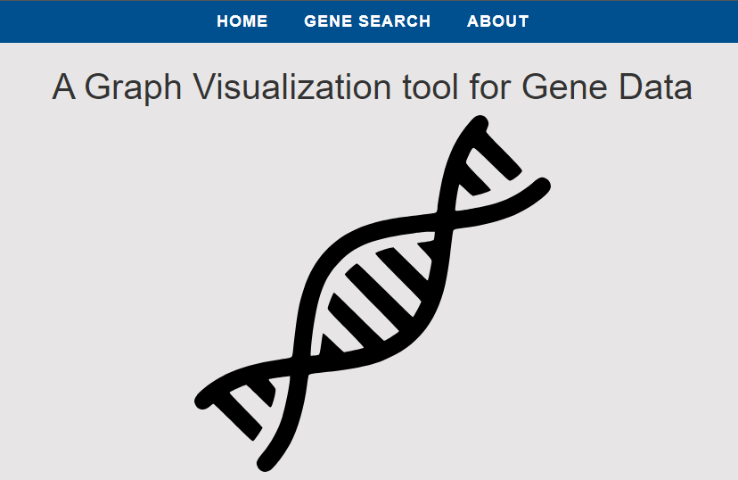

CISC275 Class Project

My first introduction to web development was in CISC275, where the final project was to build a course-scheduling site for CISC majors using React and Typescript. I was lucky to have a great group who I learned a lot from! Looking back on it now, there's certainly some changes I'd make and bugs that need fixing, but it was a great introductory experience that exposed me to the basic ideas of web development.
ROS2 Robotics

This past spring, I took an introduction to robotics course, where we used a Roomba-esque robot and the ROS2 software for robot programming! We created a variety of programs for the robot using a variety of sensors, ranging from simple wall-following using the bumper and LIDAR, to a more advanced soccer-playing program that utilized camera vision and the cv2 library for image processing and required more complex logic. These were collaborative team projects, and you can check out the code on my github (Or, you can check out just the soccer project here).
CISC498/499 Project

CISC498/499 are a pair of consecutive courses referred to as our "capstones", where we work together in a team to build a project requested by an outside source. In our case, my team partnered with a graduate student in the biology department in order to build a website to display experimental data. It was challenging creating a system to handle and represent large datasets that may not share a common structure.
CISC498/499 are a pair of consecutive courses referred to as our "capstones", where we work together in a team to build a project requested by an outside source. In our case, my team partnered with a graduate student in the biology department in order to build a website to display experimental data. It was challenging creating a system to handle and represent large datasets that may not share a common structure.